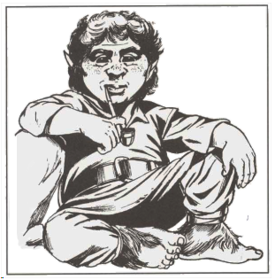

Playable Races > Half-Foot
Carefree and jolly little merrymakers with a love of life that takes them to the oddest corners of the world. Half-foots, also known as Halflings or Hobbits, are of somewhat smaller stature than Dwarves, with much less hair and brawn. They could easily be confused for human children if not for the fact their faces and skin aged visibly to match. They are about 3-4 feet tall.
Gourmets: Half-foots are skilled cooks, able to identify the effects and nutritional value of any consumable item.
Jester's Privilege: Half-foots are very socially clever, which means many find them and their sense of humor endearing, which grants them advantage on Diplomacy checks.
Goliath-Topplers: Half-foots have advantage when using slings.
Racials: +2 AGI +1 CHA -1 WIS +4 Craft (Cooking)
Health: 1d5 health points per level.
Origin: Half-foots live in small villages that dot the faces of Mistvale Pass.